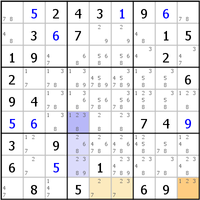
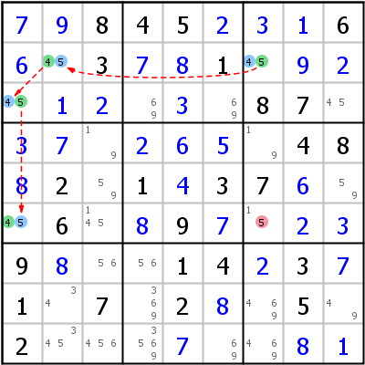
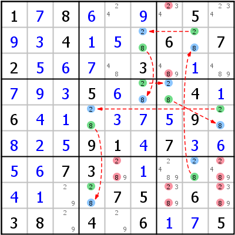
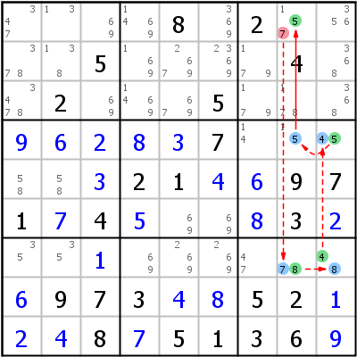
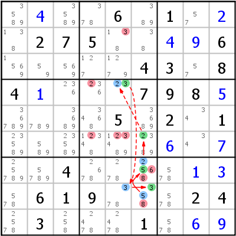
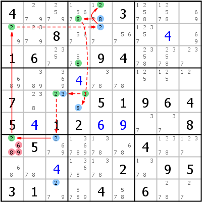
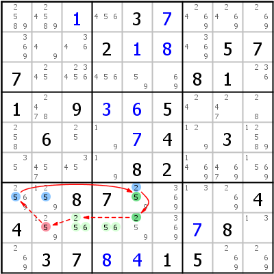
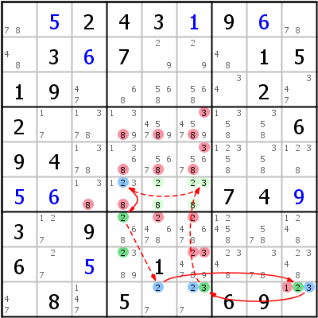
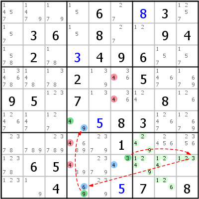

Chains (Ketten) und Loops (Schleifen)
Inhaltsverzeichnis
- Einführung
- Remote Pairs (Entfernte Paare)
- X-Chain (Einerkette)
- XY-Chain (Zweierkette)
- Nice Loop/AIC (Nette Schleife)
- Nice Loop Propagation Rules (Ausbreitungsregeln für Nette Schleifen)
- Discontinuous Nice Loop (Unterbrochene Nette Schleife)
- Alternate Inference Chains Type 1 (Kette mit alternierenden Link Typen Typ 1)
- Alternate Inference Chains Type 2 (Kette mit alternierenden Link Typen Typ 2)
- Continuous Nice Loops/AIC Loops (Ununterbrochene Nette Schleifen)
- Grouped Nice Loop/AIC (Nette Schleifen mit Gruppen-Bindungen)
Einführung
Was ist eine Kette?
Chains (Ketten) sind die grundlegendsten und gleichzeitig auch die komplexesten Strategien für Sudokus. Vermutlich kann jedes Sudoku nur mit Ketten der verschiedensten Schwierigkeitsgrade und mit Singles gelöst werden. Da Chaining (die Verwendung von Ketten) dermaßen vielseitig und effizient ist, haben auch sehr viele Personen zur Entwicklung von Methoden, Notationen und Ausdrücken beigetragen. Das hat auf der einen Seite viele sehr fortgeschrittene Strategien hervorgebracht, hat aber auch zu großer Verwirrung geführt. Außerdem gab und gibt es viele heftige Diskussionen darüber, welche Varianten von Chaining besser sind als andere und warum. Für Anfänger kann die große (unüberschaubare?) Menge an verschiedenen Strategien ein bisschen überwältigend wirken. Es zahlt sich aber trotzdem aus, einen Versuch zu wagen. Eine gute Vorgehensweise ist, mit einfachen Varianten, wie Remote Pairs, X-Chains, oder XY-Chains, zu beginnen und sich von dort aus weiter zu arbeiten.
Eine Chain ist nichts anderes als eine Kette von Schlussfolgerungen, die von einer Annahme (z.B.: Kandidat x in Zelle y ist nicht gesetzt) zu einem Ergebnis führt. Wenn eine Chain zu einem Widerspruch führt (z.B.: Annahme "x gesetzt in y" führt zum Ergebnis "x nicht gesetzt in y"), wurde damit bewiesen, dass die Annahme falsch war. Wenn die Annahme in einem solchen Fall war: "wenn Kandidat x gesetzt ist", kann x eliminiert werden. Wenn die Annahme war: "wenn Kandidat x nicht gesetzt ist", kann x sofort platziert werden.
Wenn eine Chain allerdings zu keinem Widerspruch führt, beweist sie gar nichts. Man muss dann mehrere solche Chains kombinieren um ein Resultat zu erhalten. So können zum Beispiel zwei Chains mit entgegengesetzten Annahmen ("x ist in y gesetzt" und "x ist in y nicht gesetzt") zum selben Ergebnis führen: Dieses Ergebnis muss dann war sein (das wird oft als Verity - Wahrheit - bezeichnet). Eine andere Möglichkeit wäre, dass Chains, die mit derselben Annahme starten, alle Kandidaten aus einer Zelle eliminieren (oder alle Vorkommen eines Kandidaten aus einem Haus). Das ergibt einen Widerspruch, der wieder beweist, dass die Annahme falsch ist.
Eine dritte Gruppe von Chains benützt die Tatsache, dass viele (aber nicht alle!) Chains umkehrbar sind: Wenn "x nicht gesetzt in y" zu "x ist gesetzt in z" führt, dann führt "x nicht gesetzt in z" mit Hilfe derselben Logik (nur umgekehrt) zu "x gesetzt in y". Das eliminiert x aus allen Zellen, die beide Enden der Chain sehen können.
Links (Bindungen) und Inferences (Folgerungen)
Die Basis für alle Chains sind zwei Typen von grundlegenden Folgerungen, die normalerweise "Links" (Bindungen) oder "Inferences" (Folgerungen) genannt werden (in diesem Führer wird der Begriff "Link" synonym für beides verwendet).
Weak Links (Schwache Bindungen)
Wenn zwei Objekte schwach gebunden sind, können sie nicht zur selben Zeit wahr sein. Das heißt: Wenn eines von beiden wahr ist, muss das andere falsch sein (sie können aber auch beide falsch sein; aus der Tatsache, dass eines der Objekte falsch ist, folgt daher gar nichts). In einfachen Chains sind die Objekte normalerweise Kandidaten, die im selben Haus oder in der selben Zelle sind.
Strong Links (Starke Bindungen)
Wenn zwei Objekte stark gebunden sind, können sie nicht zur selben Zeit falsch sein. Das heißt: Wenn eines falsch ist, muss das andere wahr sein (beide wahr gibt es nur in sehr fortgeschrittenen Link-Typen). Wenn man Kandidaten verwendet, benötigt man für einen Strong Link genau zwei Kandidaten in einer Zelle oder genau zwei Vorkommen eines Kandidaten in einem Haus (ein Conjugate Pair im Coloring-Jargon).
Diese beiden Link-Typen sind die Basis für alle Chains, der Unterschied zwischen beiden muss daher wirklich gut verstanden werden. Noch einmal auf den Punkt gebracht:
- Weak Link: Wenn a wahr ist, ist b falsch
- Strong Link: Wenn a falsch ist, ist b wahr
Um eine Chain bilden zu können, müssen sich die Link-Typen abwechseln (daher der Name "Alternating Inference Chain" oder AIC - frei übersetzt: Kette mit wechselnden Link-Typen). Jede Chain ist im Grunde eine AIC. Eine Chain kann daher folgendermaßen gelesen werden: "Wenn a falsch ist, muss b wahr sein, daher muss c falsch sein, d muss wahr sein, usw.". Um die Dinge noch ein bisschen komplizierter zu machen, kann man noch Folgendes berücksichtigen: Wenn zwei Kandidaten mit einem Strong Link verbunden sind, sind sie immer auch mit einem Weak Link verbunden. Das bedeutet, dass man überall dort, wo man in einer Chain einen Weak Link benötigt, auch einen Strong Link nehmen kann (umgekehrt geht das definitiv nicht).
Das oben Gesagte genügt um einfache Chains verstehen zu können und es wäre vermutlich gut jetzt gleich mit ein paar konkreten Beispielen zu starten (z.B. mit Remote Pairs). Um alle Strategien in diesem Kapitel wirklich verstehen zu können, sind die folgenden Absätze auch wichtig. Es ist aber vielleicht besser sie erst dann anzugehen, wenn man einfache Chains wirklich verstanden hat.
Group Links (Gruppen-Bindungen)
Group Links formen Bindungen zwischen mehr als zwei Kandidaten. Normalerweise benützt man nur zwei Kandidaten um einen Link zu bilden: Wenn es die letzten beiden Kandidaten im Haus oder in der Zelle sind, ist es ein Strong Link, wenn es noch andere Kandidaten gibt, ist es ein Weak Link. Wenn wir allerdings Überschneidungen zwischen Häusern berücksichtigen, können wir etwas fortgeschrittenere Link-Typen bilden. Betrachten wir das untere Beispiel (aus dem Kapitel über Locked Candidates):

Konzentrieren wir uns auf Kandidat 5 in Zeile 3 (die Farben ignorieren wir, die stammen vom Locked Candidates-Zug). Kandidat 5 gibt es in Zeile 3 noch drei Mal (Spalten 1, 2 und 7). Jede Kombination aus zwei dieser Kandidaten ist mit einem Weak Link verbunden, ein Strong Link in Zeile 3 ist nicht möglich (zu viele Kandidaten). Ein Strong Link existiert zwar in Block 1 zwischen r3c1 und r3c2 (die letzten beiden 5er in Block 1), nicht aber zwischen einem der Kandidaten in r3c12 und r3c7. Das ändert sich, wenn wir r3c12 als einen einzigen Knoten betrachten, einen Group Node. Wenn wir das tun, können wir folgende Schlüsse ziehen:
- Wenn beide Zellen r3c12 nicht 5 sind, muss r3c7 5 sein (Grouped Strong Link)
- Wenn r3c7 nicht 5 ist, muss eine der Zellen r3c12 5 sein (Grouped Strong Link)
Wie jeder Strong Link enthält auch dieser auch einen Weak Link:
- Wenn eine der Zellen r3c12 5 ist, kann r3c7 nicht 5 sein (Grouped Weak Link)
- Wenn r3c7 5 ist, können weder r3c1 noch r3c2 5 sein (Grouped Weak Link)
Links können auch zwischen zwei Group Nodes bestehen, wie im unteren Beispiel zu sehen ist:
Wir betrachten Kandidat 2 in Zeile 9, Spalte 4 und Block 8 (die Zellen wurden gefärbt um der Erklärung leichter folgen zu können): Wir haben einen Grouped Strong Link in Zeile 9 zwischen r9c9 und r9c56 und einen weiteren in Spalte 4 zwischen r6c4 und r78c4. Beide Links funktionieren wie oben dargelegt.
Innerhalb von Block 8 existiert aber auch ein Weak Link zwischen dem Group Node r9c56 und dem Group Node r78c4 (Weak Link, weil es noch andere 2er in Block 8 gibt):
- Wenn eine der Zellen r9c56 2 ist, können weder r7c4 noch r8c4 2 sein (Grouped Weak Link)
- Wenn eine der Zellen r78c4 2 ist, können weder r9c5 noch r9c6 2 sein (Grouped Weak Link)
Die drei Links lassen sich zu einer Chain kombinieren (die Chain bewirkt alleine noch nichts, kann aber Teil einer längeren Chain werden, siehe Grouped Nice Loops):
r6c4 =2= r78c4 -2- r9c56 =2= r9c9
ALS in Chains
ALS steht für "Almost Locked Set" (Fast Gesperrte Menge) und wird detailliert im Kapitel über ALS behandelt. Für jetzt genügt es zu wissen, dass ein ALS eine Gruppe von Zellen innerhalb eines Hauses ist, die N+1 Kandidaten in N Zellen aufweist. Ein ALS für sich selbst genommen beweist gar nichts, aber man kann trotzdem sehr interessante Dinge mit ihm anstellen. Wird ein Kandidat aus einem ALS entfernt, wird das ALS ein Locked Set (besser bekannt als Naked Subset). Das allerdings ist genau die Definition eines Strong Links. Nehmen wir z.B. ein imaginäres ALS mit Kandidaten {1234} in drei Zellen:
- Wenn Kandidat 1 im ALS nicht gesetzt ist, wird das ALS ein Locked Set für Kandidaten {234} (Strong Link)
- Wenn das ALS kein Locked Set für Kandidaten {234} ist, muss Kandidat 1 im ALS gesetzt sein (Strong Link)
Ein ALS wird über einen Weak Link erreicht (ein Kandidat muss aus dem ALS entfernt werden) und auch wieder über einen Weak Link verlassen (das resultierende Locked Set eliminiert irgendeinen Kandidaten außerhalb des ALS). Der nötige Strong Link zwischen den beiden Weak Links ist die Tatsache, dass das ALS, wie oben beschrieben, ein Locked Set wird.
Chains versus Nets
Was eine Chain und was ein Net ist, darüber wurden zwischen Sudoku Spielern schon jede Menge heißer Diskussionen geführt. HoDoKu verwendet die folgende Definition: In einer Chain folgt jeder Schritt ausschließlich aus dem Schritt unmittelbar vor ihm. Wenn ein Schritt nur dann funktioniert, wenn man die Folgen eines Schrittes weiter vorne in der Kette mit einbezieht, wird aus der Chain ein Net. Das gleiche gilt, wenn sich die Chain in Zweige aufteilt, die sich später wieder treffen.
Notation
Um Chains aufschreiben zu können wurden zahlreiche Notationen entwickelt. Drei Schreibweisen sind derzeit noch in Gebrauch:
- Forcing Chain-Notation (in HoDoKu für Forcing Chains/Nets verwendet)
- Nice Loop-Notation (in HoDoKu für alles andere verwendet)
- AIC- (oder Eureka-) Notation (derzeit in HoDoKu nicht implementiert)
Forcing Chain-Notation
Forcing Chain-Notation verwendet Ausdrücke der Form [cell]=[value] (oder [cell]<>[value]) um der Chain folgen zu können. Das linke Remote Pairs-Beispiel wäre dann:
r2c7<>4 => r2c7=5 => r2c2<>5 => r2c2=4 => r3c1<>4 => r3c1=5 => r6c1<>5 => r6c1=4
Um die Ausdrücke kurz zu halten, werden die "<>"-Teile oft weggelassen (außer am Start und am Ende der Chain):
r2c7<>4 => r2c7=5 => r2c2=4 => r3c1=5 => r6c1=4
Diese Kürze bewirkt leider auch, dass Forcing Chain-Notation manchmal etwas schwer nachzuvollziehen ist.
Nice Loop-Notation
Nice Loop-Notation verwendet "-x-" für Weak Links und "=x=" für Strong Links. Links werden nur aufgeschrieben, wenn sie sich zwischen Zellen befinden (Links innerhalb von Zellen werden impliziert). Das Remote Pair in Nice Loop-Notation:
r2c7 -5- r2c2 -4- r3c1 -5- r6c1
Um klarzustellen, wie die Chain beginnt und endet (der erste und der letzte Link für Ziffer 4 werden komplett unterschlagen), können Start- und End-Links an die Notation angehängt werden:
4- r2c7 -5- r2c2 -4- r3c1 -5- r6c1 -4
AIC-Notation
In AIC-Notation wird nichts ausgelassen. "-" wird für Weak Links verwendet, "=" für Strong Links, Kandidaten stehen in runden Klammern vor der betroffenen Zelle. Wenn ein Link innerhalb einer Zelle vorkommt, wird er mit in die Klammern geschrieben. Das Remote Pair:
(4=5)r2c7-(5=4)r2c2-(4=5)r3c1-(5=4)r6c1
Chains in HoDoKu anzeigen
Wenn HoDoKu eine Chain anzeigt, werden die Links zwischen Zellen durch Pfeile symbolisiert (durchgezogene Linien für Strong Links, strichlierte für Weak Links). Grüner Hintergrund bedeutet "Kandidat gesetzt", blauer Hintergrund bedeutet "Kandidat nicht gesetzt". In kannibalistischen Chains (die Chain eliminiert Kandidaten, die Teil der Chain selbst sind), werden die Eliminierungen bevorzugt dargestellt. In komplexen Forcing Chains/Nets kann ein Kandidat zu mehreren Chains gehören und daher verschiedene Farben haben. Welche Farbe schließlich dargestellt wird, kann nicht vorhergesagt werden.
Remote Pairs (Entfernte Paare)
Remote Pairs ist die einfachste Chaining-Strategie. Berücksichtig werden nur zweiwertige Zellen, die alle dieselben Kandidaten enthalten müssen. Da alle Zellen zweiwertig sind, enthält jede einen Strong Link zwischen den beiden Kandidaten. Die Links zwischen den Zellen können daher Weak Links sein (zwei benachbarte Zellen müssen lediglich im selben Haus sein). Um etwas eliminieren zu können, muss die Chain mindestens vier Glieder lang sein. Das Remote Pair stellt sicher, dass zwei benachbarte Zellen in der Chain verschiedene Werte haben müssen (welche, ist unbekannt). Jede Zelle außerhalb des Remote Pairs, die zwei Zellen mit verschiedenen Werten sieht, kann keine der Remote Pair-Ziffern enthalten.
Statt eines Remote Pairs können immer auch ein oder zwei Simple Color-Züge ausgeführt werden.
 Linkes Beispiel: Wenn r2c7 5 ist, muss r3c1 auch 5 sein und r2c2 und r6c1 müssen 4 sein oder genau umgekehrt. Anders ausgedrückt: Wenn r2c7 5 ist, ist r6c1 4; wenn r2c7 4 ist, ist r6c1 5 (die Zellen r2c7 und r6c1 haben entgegengesetzte Polarität). Jede Zelle, die diese beiden Zellen sieht (im Beispiel r6c7) kann weder 4 noch 5 sein.
Das rechte Beispiel startet mit r7c8 und endet mit r8c4. Die Chain ist 8 Zellen lang. Alle Zellen, die Remote Pair-Zellen mit entgegengesetzter Polarität sehen, können weder 2 noch 8 sein.
X-Chain (Einerkette)
X-Chains sind Chains, die nur eine Ziffer verwenden. X-Chains der Länge 4 werden manchmal auch Turbot Fish genannt und können mit Hilfe einer der spezialisierten Turbot-Varianten (Skyscraper, 2-String Kite, oder Empty Rectangle) leicht gefunden werden.
Wichtig ist bei X-Chains, dass sie mit einem Strong Link starten und enden müssen. Das stellt sicher, dass einer der Endpunkte die Ketten-Ziffer enthalten muss. Diese Ziffer kann daher aus allen Zellen gelöscht werden, die beide Enden der X-Chain sehen.


Linke Seite: Wenn r1c2 nicht 7 ist, muss r1c9 7 sein, r2c8 kann nicht 7 sein, r7c8 muss 7 sein, r7c3 kann nicht 7 sein und r4c3 muss 7 sein. Wenn andererseits r4c3 nicht 7 ist, dann muss r7c3 7 sein, r7c8 kann nicht 7 sein, r2c8 muss 7 sein, r1c9 kann nicht 7 sein und r1c2 muss 7 sein. Wie man es auch betrachtet, eine der Zellen r1c2 oder r4c3 muss 7 sein. r4c2 sieht beide diese Zellen und kann daher nicht auch noch 7 sein.
Rechte Seite: Die X-Chain beweist, dass entweder r4c2 oder r6c5 3 sein muss. 3 kann von r6c123 eliminiert werden.
XY-Chain (Zweierkette)
Eine XY-Chain ist eine Chain, die nur zweiwertige Zellen verwendet (ähnlich wie Remote Pairs), allerdings können die Zellen beliebige Kandidaten haben. Die einzige Einschränkung (außer der offensichtlichen Notwendigkeit, dass die Links korrekt sein müssen) ist, dass die XY-Chain mit einen Strong Link für ein und dieselbe Ziffer starten und enden muss. Wie bei X-Chains beweist das, dass diese Ziffer in einem der Endpunkte der Chain platziert werden muss, und dass sie daher aus allen Zellen eliminiert werden kann, die beide Enden der Chain sehen.
Wie bei Remote Pairs sind auch hier alle Strong Links innerhalb der Zellen und alle Weak Links zwischen den Zellen.


Linkes Beispiel: 3- r7c4 -9- r5c4 -8- r5c6 -2- r2c6 -3 (sprich: wenn r7c4 nicht 3 ist muss sie 9 sein; r5c4 kann dann nicht 9 und muss 8 sein; r5c6 kann nicht 8 und muss 2 sein; r2c6 kann nicht 2 und muss 3 sein; die andere Richtung bleibt dem Leser überlassen). Wenn man Spalte 6 betrachtet, sieht man, dass sie nur noch zwei Kandidaten 2 übrig hat. r5c6 und r2c6 sind daher mit einem Strong Link für 2 verbunden. Für die XY-Chain benötigen wir hier aber keinen Strong Link, sondern einen Weak Link. Man kann aber den Strong Link nehmen und ihn, wie oben ausgeführt, als Weak Link verwenden
Rechtes Beispiel: 8- r6c5 -4- r8c5 -1- r8c4 -9- r3c4 -8
Nice Loop/AIC (Nette Schleife)
Nice Loop Propagation Rules (Ausbreitungsregeln für Nette Schleifen)
Nice Loops sind Chains, deren Ende mit der Startzelle verlinkt ist. Um das Finden dieser Chains einfacher zu gestalten, wurden Ausbreitungsregeln definiert. Wie bei der Nice Loop-Notation (siehe oben), wird auch bei diesen Regeln alles, was sich innerhalb der Zelle abspielt, ignoriert, lediglich Links zwischen Zellen werden berücksichtigt:
- Wenn ein Knoten zwei Strong Links hat, müssen die Ziffern verschieden sein
- Wenn ein Knoten zwei Weak Links hat, muss die Zelle zweiwertig sein, die Ziffern müssen verschieden sein
- Wenn ein Knoten zwei verschiedene Links hat (einer weak, einer strong), müssen die Ziffern gleich sein
Betrachten wir Regel Nummer 2: Wenn eine Zellen mit einem Weak Link erreicht und auch wieder verlassen wird, muss der zwischen den Weak Links nötige Strong Link innerhalb der Zelle sein. Die Zelle muss daher zweiwertig sein und der ausgehende Link muss für eine andere Ziffer sein als der eingehende.
Ob man jetzt die Ausbreitungsregeln verwendet oder versucht die Linktypen zu alternieren, bleibt natürlich
jedem selbst überlassen. Der folgende Link führt zu einem
Nice Loop Tutorial [dead link],
das die Regeln im Detail und mit jeder Menge Beispielen erklärt (leider nur auf Englisch).
Der Link zurück zur Ausgangszelle entscheidet über den Typ der Nice Loop: Discontinuous (unterbrochen) oder Continuous (ununterbrochen). Wenn der letzte Link einen Widerspruch hervorruft, ist die Schleife unterbrochen. Wenn sich die Schleife aber "nett" schließt (man könnte ihr wieder und wieder rund herum folgen ohne ein Ende zu entdecken), ist die Schleife ununterbrochen.
Discontinuous Nice Loop (Unterbrochene Nette Schleife)
Schließt die Schleife mit einem Widerspruch, so ist sie unterbrochen. Die Auswirkungen kann man am besten anhand der Beispiele erkennen.

Linkes Beispiel: r1c8 -7- r7c8 -8- r7c9 -4- r4c9 -5- r4c8 =5= r1c8. Die Schleife startet mit einem Weak Link für 7 (die Annahme ist: "wenn r1c8 7 ist"), aber die Ausgangszelle wird über einen Strong Link für 5 wieder erreicht. Das bedeutet: "Wenn Zelle r1c8 7 ist, ist sie 5", oder (da 5 und 7 in der selben Zelle sind und daher mit einem Weak Link verbunden sind) "wenn Zelle r1c8 7 ist, ist sie nicht 7" - eine Widerspruch, der beweist, dass die Annahme falsch war. 7 kann von r1c8 gelöscht werden.
Rechtes Beispiel: r8c2 =4= r8c9 -4- r9c9 -2- r9c3 =2= r7c2 =4= r8c2. Die Schleife startet mit einem Strong Link für 4 (Annahme: "wenn r8c2 nicht 4 ist") und endet auch wieder mit einem Strong Link für 4. Das heißt: "Wenn r8c2 nicht 4 ist, ist sie 4" - ein Widerspruch, der beweist, dass r8c2 wirklich 4 sein muss. 4 kann in r8c2 platziert werden (HoDoKu setzt keine Ziffern bei Nice Loops, es eliminiert alle anderen Kandidaten aus der Zelle, was ein Naked Single übrig läßt). Man kann die Schleife auch als Verity betrachten: Die Schleife beweist, dass r8c2 4 sein muss, wenn sie nicht 4 ist. Aber wenn die Zelle 4 ist, ist sie natürlich auch 4. Beide Möglichkeiten (r8c2=4 und r8c2<>4) führen zum selben Ergebnis: r8c2=4, das daher wahr sein muss.
Alternate Inference Chain Type 1 (Kette mit alternierenden Link Typen Typ 1)
Jede AIC kann als eine Kombination von einer oder mehreren Discontinuous Nice Loops gesehen werden (HoDoKu meldet einen Zug nur dann als AIC, wenn er mehr als einen Kandidaten eliminiert; AICs mit nur einer Eliminierung werden immer als Discontinuous Nice Loop ausgegeben). AICs starten und enden mit einem Strong Link und haben dazwischen abwechselnd Weak und Strong Links ohne weitere Einschränkungen.
Eine AIC Typ 1 startet und endet mit einem Strong Link für dieselbe Ziffer und beweist somit, dass diese Ziffer in Start- oder End-Zelle platziert werden muss. Das eliminiert diese Ziffer aus allen Zellen, die beide Enden der AIC sehen können.


Linkes Beispiel: 5- r1c2 -3- r1c4 =3= r3c4 =9= r7c4 =2= r7c2 -2- r8c3 -5. Entweder r1c2 oder r8c3 muss 5 sein, also können weder r123c3 noch r78c2 5 sein.
Rechtes Beispiel: 6- r2c5 -7- r2c1 =7= r6c1 =6= r6c7 -6- r2c7 =6= r3c8 -6. Hier fällt auf, dass einer der eliminierten Kandidaten (6 in r2c7) tatsächlich Teil der Chain selbst ist. Das ist absolut erlaubt. Die AIC ist "kannibalistisch".
Alternate Inference Chain Type 2 (Kette mit alternierenden Link Typen Typ 2)
Eine AIC Typ 2 startet und endet mit einem Strong Link für zwei verschiedene Ziffern in zwei Zellen, die einander sehen. Das beweist, dass die Endziffer nicht in der Startzelle und die Startziffer nicht in der Endzelle sein kann.


Linkes Beispiel: 4- r6c2 =4= r9c2 -4- r9c5 -9- r5c5 =9= r5c4 =8= r6c4 -8. Wir starten mit 4 in r6c2 und enden mit 8 in r6c4. 4 kann nicht in r6c4 sein und 8 nicht in r6c2. Beweis für Kandidat 4: Wenn r6c2<>4 ist, muss r6c4 8 sein, also kann r6c4 nicht 4 sein. Ist aber r6c2 4, kann r6c4 auch nicht 4 sein, weil sich die Zellen sehen. Wir haben eine Verity, die beweist, dass r6c4 nicht 4 sein kann.
Rechtes Beispiel: 8- r1c8 -2- r1c7 =2= r6c7 =6= r6c3 =5= r4c2 =2= r4c8 -2. 2 kann nicht in r1c8 sein und 8 nicht in r4c8.
Continuous Nice Loops (AIC Loops) (Ununterbrochene Nette Schleifen)
Continuous Nice Loops und AIC Loops sind genau dasselbe. Sie sind nicht so häufig wie Discontinuous Nice Loops, hat man aber eine gefunden, ist sie normalerweise sehr effizient. Eine Schleife ist ununterbrochen, wenn der Link zurück zur Startzelle gemeinsam mit dem ersten Link den Ausbreitungsregeln entspricht, oder anders ausgedrückt, wenn in der Start-/Endzelle kein Widerspruch auftritt.
Was Continuous Nice Loops so effizient macht, ist die Tatsache, dass alle Weak Links in der gesamten Schleife zu Strong Links umgewandelt werden. Das heißt, dass alle zusätzlichen Kandidaten in den Häusern oder Zellen, die die Weak Links beinhalten, gelöscht werden können.

Linkes Beispiel: 5= r7c6 =2= r6c6 -2- r4c5 -3- r8c5 =3= r8c6 =5= r7c6 =2. Zelle r7c6 wird mit einem Strong Link für 2 verlassen und mit einem Strong Link für 5 wieder erreicht (erste Ausbreitungsregel). Ein Weak Link existiert zwischen den Kandidaten 2 und 5 in Zelle r7c6, alle Regeln für AICs werden eingehalten. Die Eliminierungen: Der erste Weak Link ist innerhalb der Startzelle zwischen 2 und 5, alle anderen Kandidaten in dieser Zelle können gelöscht werden (6 und 8). Der nächste Weak Link ist in Block 5 zwischen 2 in r6c6 und 2 in r4c5, alle anderen Kandidaten 2 in Block 5 können eliminiert werden. Der nächste Weak Link ist für 3 in Spalte 5 (eliminiert 3 von r26c5) und zu guter Letzt gibt es noch einen Weak Link zwischen 3 und 5 in r8c6 (eliminiert 8 in dieser Zelle).
Rechtes Beispiel: 9= r7c5 =1= r7c9 =7= r3c9 -7- r3c3 =7= r1c3 =5= r1c6 -5- r8c6 =5= r8c4 =7= r7c4 =9= r7c5 =1. Weak Links innerhalb von Zellen finden sich in r7c5, r7c9, r1c3, r8c4 und r7c4. Weak Links zwischen Zellen sind in Zeile 3 (nichts zu löschen) und Spalte 6.
Grouped Nice Loop/AIC (Nette Schleifen mit Gruppen-Bindungen)
Nur Group Nodes
Der einzige Unterschied zwischen (normalen) Nice Loops/AICs und Grouped Nice Loops/Grouped AICs ist, dass die zweiteren Group Links verwenden.

Linkes Beispiel: Grouped Discontinuous Nice Loop r7c1 =2= r2c1 -2- r2c5 =2= r1c5 =8= r13c4 -8- r5c4 -3- r5c3 -2- r79c3 =2= r7c1. Die beiden Group Links sind für Kandidat 8 in Zellen r13c4 und für Kandidat 2 in r79c3. Die Logik für den ersten Group Link geht wie folgt: Wenn r1c5 nicht 8 ist, muss entweder r1c4 oder r3c4 8 sein; das heißt, dass r5c3 nicht 8 sein kann. Zweiter Group Link: Wenn r5c3 2 ist, können weder r7c3 noch r9c3 2 sein; das heißt, dass r7c1 2 sein muss.
Rechtes Beispiel: Grouped Continuous Nice Loop 2= r6c4 =1= r6c3 -1- r9c3 =1= r9c9 =2= r9c56 -2- r78c4 =2= r6c4 =1.
Beide Group Links sind für Kandidaten 2: Überschneidung von Zeile 9 mit Block 8 (r9c56) und
Überschneidung von Spalte 4 mit Block 8 (r78c4). Die Logik: Wenn r9c9 nicht 2 ist, muss
entweder r9c5 oder r9c6 2 sein; das heißt, dass weder r8c4 noch r7c4 2 sein können und es folgt daher, dass
r6c4 2 sein muss. Der Weak Link zwischen den Group Nodes r9c56 und r78c4 befindet sich innerhalb von Block 8
und eliminiert alle anderen 2en aus diesem Block.


Linkes Beispiel: Grouped AIC 5- r7c2 -6- r6c2 -3- r6c4 -7- r45c5 =7= r3c5 =6= r3c6 -6- r9c6 -5 (Group Link für 7 in r45c5 - gleiche Logik wie oben).
Rechtes Beispiel: Grouped AIC 4- r2c5 =4= r9c5 -4- r9c9 -1- r89c8 =1= r2c8 -1- r2c456 =1= r1c4 -1. Das Beispiel hat zwei Group Links. Einer davon (r2c456) hat drei Zellen (das Maximum für einen Group Node). Eine dieser Zellen ist zufälligerweise auch die Startzelle. Das schließt die Chain nicht zu einer Schleife: Ein Group Node ist nicht dasselbe wie eine einfacher Knoten (eine Zelle). Es führt jedoch dazu, dass eine der Zellen des Group Nodes eliminiert wird, was die Chain kannibalistisch macht.
Group Nodes und ALS
Wenn wir ALS-Knoten in Chains und Loops zulassen, wird es erst so richtig interessant (und es ist damit noch lange nicht aus: AURs, Almost Fish usw. können ebenfalls Knoten sein). Um die unten gezeigten Chains in HoDoKu sehen zu können, muss die entsprechende Option aktiviert werden (ab Release 1.2 sind ALS-Knoten defaultmäßig ausgeschaltet).
Besonders interessant sind ALS-Knoten in Grouped Continuous Nice Loops: Wenn wir alle ALS-Kandidaten hernehmen und davon die Kandidaten, die zum Erreichen und Verlassen des ALS verwendet worden sind, abziehen (sie sind normale Weak Links, die wie üblich in Continuous Loops zu Strong Links werden), sind die verbleibenden Kandidaten auf die ALS-Zellen beschränkt und bewirken Eliminierungen in allen Zellen, die alle Vorkommen einer der eingesperrten Ziffern innerhalb des ALS sehen können. Bitte beachten Sie, dass das nur für Continuous Nice Loops gilt.
 Linkes Beispiel: Grouped Discontinuous Nice Loop r8c2 -5- r7c12 =5= r7c5 =2= r8c5 -2- ALS:r8c34 -5- r8c2. Wir fangen einfach an: Wenn 5 in r8c2 gesetzt ist (Annahme), können weder r7c1 noch r7c2 5 sein, r7c5 muss 5 sein und kann daher nicht 2 sein, r8c5 muss 2 sein und r8c3 kann nicht 2 sein. r8c3 war aber der einzige 2er im ALS r8c34 {256}. Das reduziert das ALS auf ein Locked Set für Kandidaten {56} in r8c34. Mögliche Eliminierungen für dieses Locked Set sind 5 in r8c2 und r8c5 und 6 in r8c6. Wir interessieren uns nur für r8c2, weil das unsere Startzelle war. Der Weak Link widerspricht der Annahme, 5 kann aus r8c2 gelöscht werden.
Rechtes Beispiel: Das Puzzle ist dasselbe wie für das Grouped Continuous Nice Loop-Beispiel von oben. Wenn wir ALS-Knoten zulassen, können wir noch ein paar Eliminierungen herausholen (nicht dass das nötig wäre: beide Schleifen lösen das Sudoku).
Die Schleife: Grouped Continuous Nice Loop 2= r9c9 =3= r9c6 -3- ALS:r6c56 -2- r6c4 =2= r78c4 -2- r9c56 =2= r9c9 =3. Der Weak Link in Zelle r9c9 eliminiert Kandidat 1, der Weak Link in das ALS (Kandidat 3) eliminiert alle anderen 3er aus Spalte 6. Das ALS wird über Kandidat 2 wieder verlassen, was alle anderen 2er aus Zeile 6 löschen würde, wenn es denn welche gäbe. Aber das ALS hat immer noch einen Kandidaten übrig: Kandidat 8. Er wird im ALS auf die Zellen r6c56 beschränkt und eliminiert 8 aus allen Zellen, die diese beiden Zellen sehen können (8 Eliminierungen im Ganzen). Die Eliminierungen für 2 sehen ebenfalls je eine ALS-Zelle, aber sie können nicht vom ALS eliminiert werden: Erstens müsste jede Zelle alle 2er im ALS sehen können und zweitens ist Kandidat 2 nicht auf das ALS beschränkt, es ist der Ausgangskandidat. Die 2er werden vom Weak Link zwischen Group Node r78c4 und Group Node r9c56 (beide in Block 8) gelöscht.

Zum Abschluss noch zwei AICs mit ALS-Knoten:
Linkes Beispiel: Grouped AIC 4- r8c6 -3- ALS:r78c7,r8c89,r9c8 -6- r9c4 -9- r6c4 -4. Nichts Neues hier, nur ist das ALS ziemlich groß: 6 Kandidaten ({123469}) in 5 Zellen (r78c7,r8c89,r9c8).
Rechtes Beispiel: Grouped AIC 6- r7c1 -8- ALS:r29c3 =6= r5c3 -6. Diese Chain ist interessant, weil sie zeigt, wie ein Knoten durch ein ALS forciert werden kann. Das ALS ist r29c3 {189}. Es wird über Kandidat 8 in r9c3 erreicht, was das Locked Pair {19} übrig läßt. Der nächste Knoten r5c3 hat Kandidaten {169}: 1 und 9 werden vom Locked Set eliminiert, das läßt 6 als einzigen Kandidaten in dieser Zelle, der dadurch forciert wird (er muss gesetzt werden).
HoDoKu unterstützt derzeit keine Links mit mehr als einem Kandidaten, die Chain wird daher wie oben gezeigt geschrieben. Eine bessere Notation wäre: 6- r7c1 -8- ALS:r29c3 -19- r5c3 -6 (das ALS muss über einen Weak Link erreicht und verlassen werden).
Copyright © 2008-12 von Bernhard Hobiger
Zuletzt geändert am 5. Mai 2025 von shorty#3746
(basierend auf dem 1to9only Github-Repo)
Alles Material auf dieser Site unterliegt der GNU FDLv1.3.